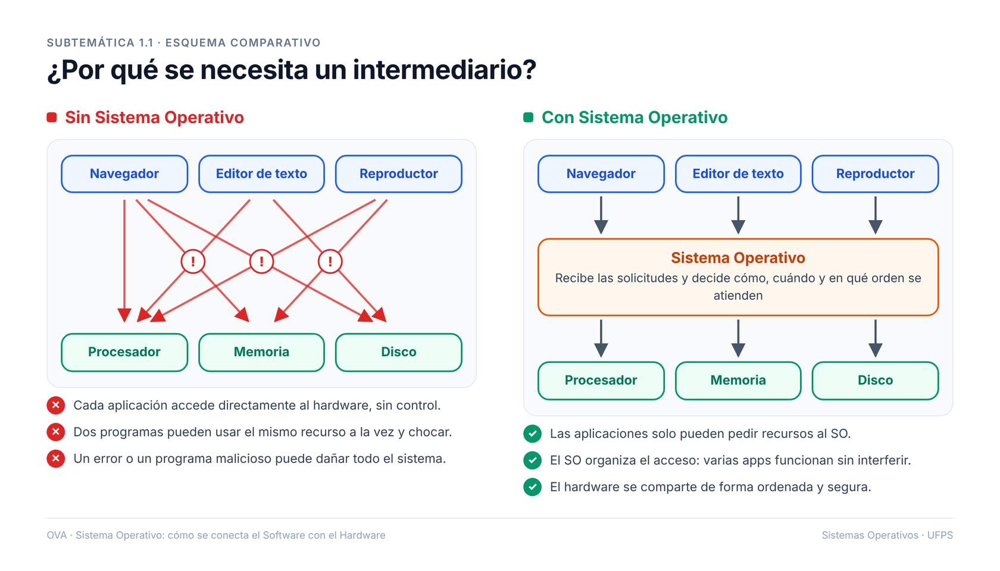

1. Introducción
Imagen ilustrativa de un usuario utilizando una aplicación cotidiana en su computador (procesador de texto, reproductor multimedia, navegador)
Video interactivo introductorio propio - introducción a los sistemas operativos

esquema comparativo “con SO” vs. “sin SO” (generado con IA)
¿Por qué no se permite el acceso directo de las aplicaciones al hardware?
¿Cómo organiza el SO el uso de recursos como memoria, disco y dispositivos de entrada/salida?
¿Qué riesgos se evitarían gracias a la intermediación del SO?
¿Qué ventajas ofrece compartir el hardware entre múltiples aplicaciones a través del SO?